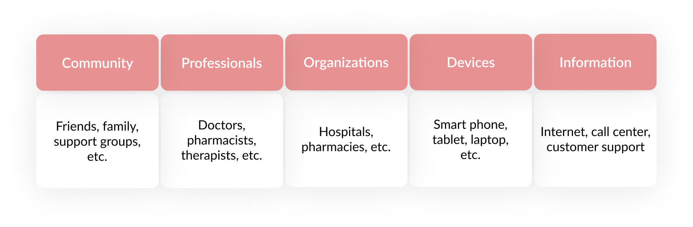
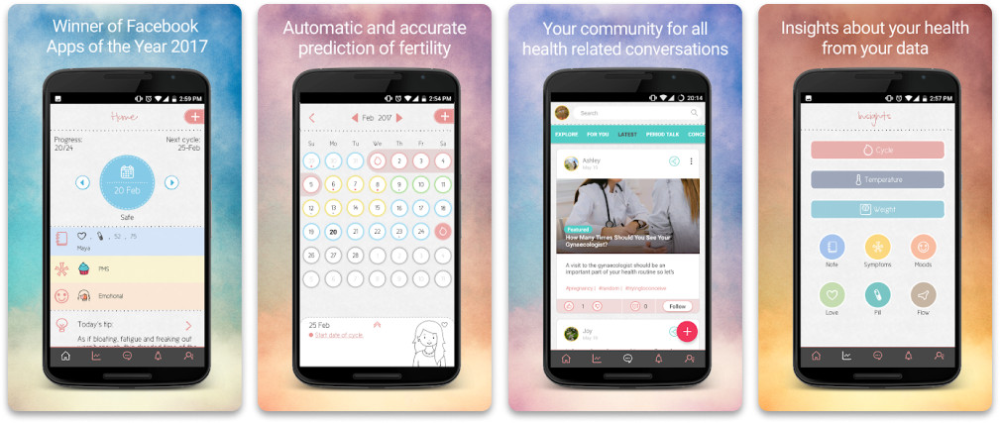
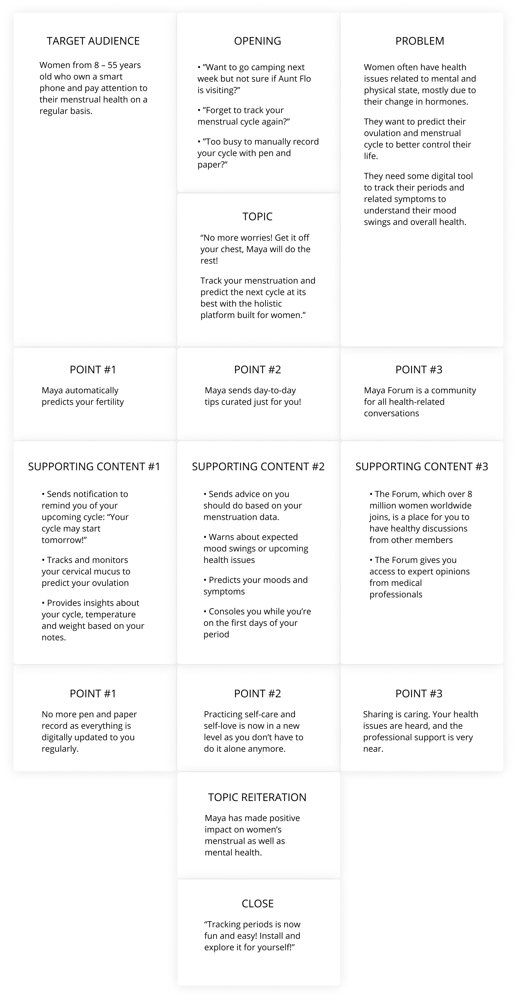

The objective of this mobile app review is to understand how user stories are told throughout digital media.
The app to be reviewed is Maya, a femtech product that tracks periods, related symptoms, mood swings, pregnancy and women’s overall health
The needs of Maya users are evaluated and the influences within their ecosystem are outlined into categories. The solutions to the target users are shown in a story structure that reflect the experience within the app.
Problem
As a woman, I find it hard to track my menstrual cycle monthly. I keep forgetting to record the changes in my body as well as the first days of my period. Besides, when I am about to go on vacation or just plan to go to the beach, I am always nervous that the period may come and ruin my day; this is not just my problem but also other women’s issues.
Solution
Thanks to Maya, a user-friendly app that help tracking period cycles and health issues, I can totally say that it has made a big impact on my daily life by helping create not only healthy habits but also positive feeling while using it.
Women’s health ecosystem includes stakeholders and things that help them solve the need:
By identifying the basic need to feel safe and secure during period days as well as the psychological need to be supported and feel the sense of belonging to a community, Maya provides a solution to women’s sensitive issues, all-in-one app, accessible anywhere, anytime.
I outline and re-tell the story of Maya solutions in the structure below.
